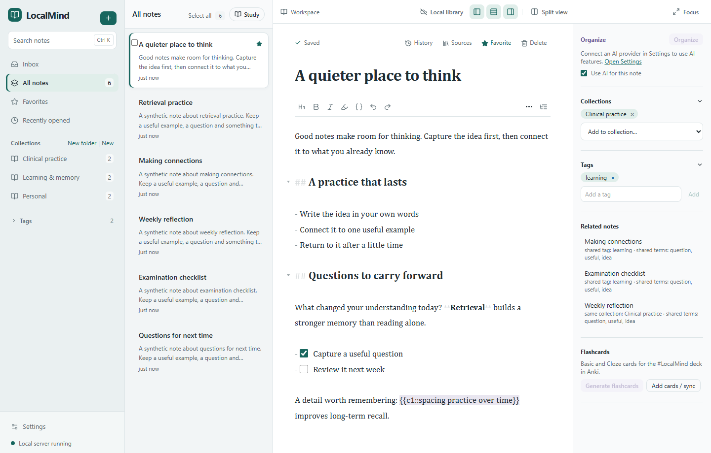
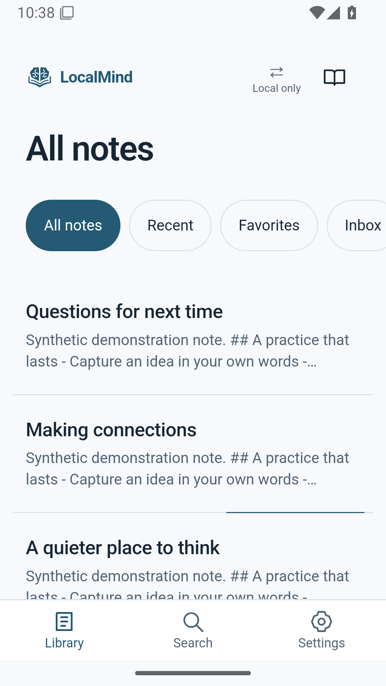
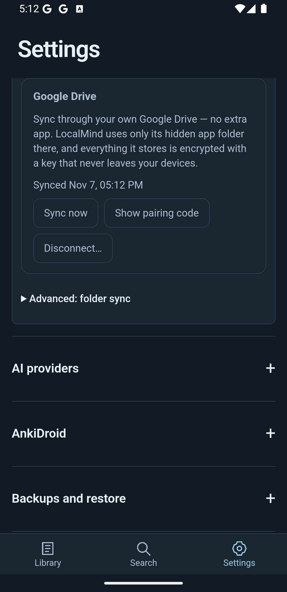

Write without waiting
Markdown, images, checklists and version history. Search your local library, file notes into collections, and keep your manual choices in control.
Write locally. Find connections.
Turn what matters into flashcards.
LocalMind brings your notes, related ideas and study tools into one library on your device. AI is optional. Your own words remain yours to edit.
Windows and Android 0.6.7 introduce Open volume, our brain-and-book identity. All existing notes and learning tools stay familiar. Mac 0.5.0 downloads remain affected. Core notes work offline.

Start with a note. Keep the tools you need close, and leave the rest optional.
Markdown, images, checklists and version history. Search your local library, file notes into collections, and keep your manual choices in control.
Discover related notes locally. Optional AI can suggest organization or help build a new master note while keeping the originals intact.
Read in Study Mode or create editable flashcards. Send approved cards to Anki Desktop; Android supports Basic and Cloze cards through AnkiDroid.

Capture a passage before the thought disappears.
Share text from another Android app, preview it, then save a new note or append it to one you already have. Keep source URLs alongside your words.
Encrypted Google Drive synchronization is available in LocalMind 0.6.1 for Windows and Android. Sign in with Google in Settings → Sync and your notes, images and deletions stay in step across your devices.
LocalMind requests access only to its hidden app folder in your Drive. Sync journals and images are encrypted before upload. Pair devices using the same Google account and a private recovery code.
Syncthing remains available as an alternative. Google's sign-in screen shows this website's address rather than the LocalMind name.
New in 0.6.8: lost your pairing code? Can't find your pairing code? in Settings → Sync shows it again from any device that still has it, and Use another Google account switches accounts safely.
Sync help and pairing codes · How Drive data and recovery work
Official binaries, accurate platform versions and signed update metadata.
v0.6.8
Windows 10 / 11, 64-bit. New: Google Drive pairing-code recovery and account switching. Report a bug or request a feature from Settings.
Download Windows installerThe installer is not Authenticode-signed; Windows may show a warning. LocalMind update metadata is cryptographically signed.
v0.6.8 · code15
Android 7 or later. Official release-signed APK. New: folder sync can always be stopped, even if the folder stops responding.
Download Android APKAllow installation from the browser or file manager you use. Keep the official signing identity when updating; do not uninstall to upgrade.
v0.5.0 · affected
Defer installation. Apple Silicon has an invalid resource seal; Intel is unsigned and awaits final-DMG validation. Corrected Mac builds are not yet available.
Read the Mac launch noticeUse LocalMind as a local notebook, add a study workflow, or connect an optional provider. Provider availability, charges and data handling vary by platform and account.
Read the Privacy PolicyOur brain-and-book identity brings notes, knowledge and memory together. The refreshed icons are available in Windows 0.6.7 and Android 0.6.7/code14 and later, with the same application identities and existing libraries.
For help or ideas, use Settings → Feedback in Windows 0.6.7. Review what will be sent before submitting. Notes and attachments are never included.